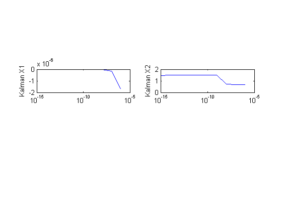
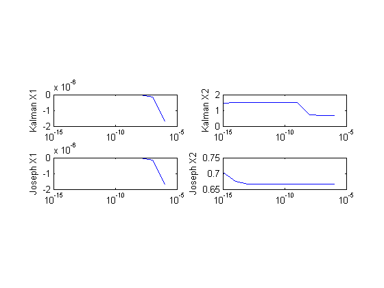
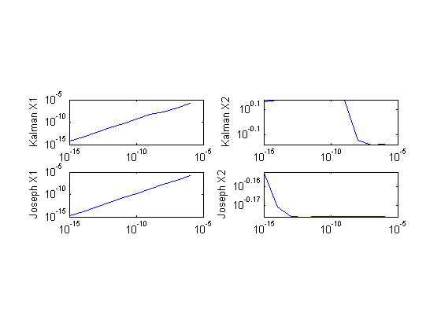
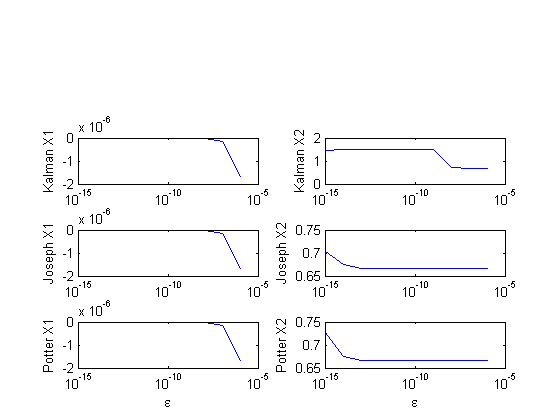
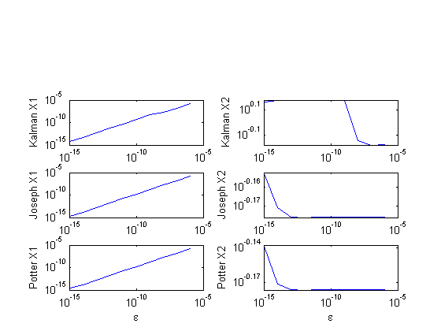
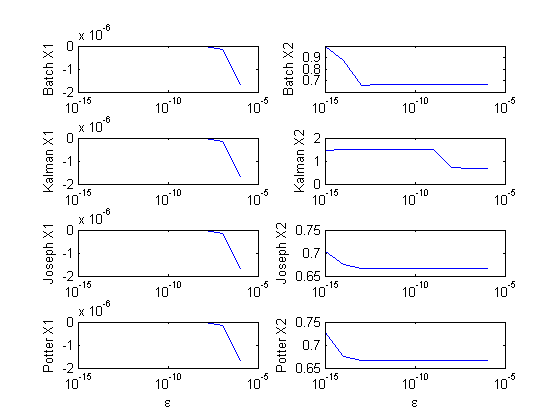
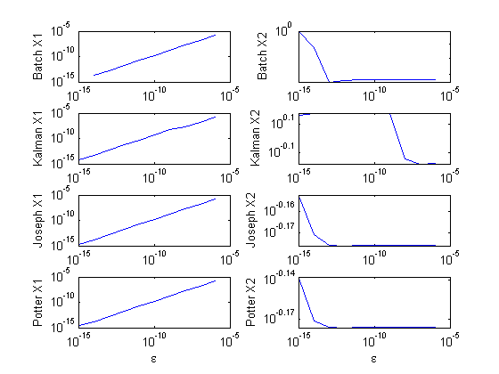

HW8 Problem 1
John Clouse
Contents
Initialize
clear close all logx_fig = figure; loglog_fig = figure; % Epsilon values len = 10; eps = ones(len,1)*1e-5; % start at 1e-6 after the loop iterates for ii = 1:len eps(ii:end) = eps(ii:end)/10; end std_dev = 1./eps; R = 1; X_exact = [3;1]; X_ap0 = [4;2]; % a priori state
CKF State
X_ckf = zeros(2,len); diff_ckf = zeros(2,len); for ii = 1:len H1 = [1 2*eps(ii)]; P1_ap = eye(2)*std_dev(ii)*std_dev(ii); K1 = P1_ap*H1'*inv(H1*P1_ap*H1' + R); X_est1 = X_ap0 + K1*(H1*X_exact - H1*X_ap0); P1 = (eye(2) - K1*H1)*P1_ap; X_ap1 = X_est1; %P1 is now P2_ap P2_ap = P1; H2 = [1 3*eps(ii)]; K2 = P2_ap*H2'*inv(H2*P2_ap*H2' + R); X_est2 = X_ap1 + K2*(H2*X_exact - H2*X_ap1); P2 = (eye(2) - K2*H2)*P2_ap; X_ckf(:,ii) = X_est2; diff_ckf(:,ii) = X_exact - X_ckf(:,ii); end row = 2; HW8_P2_plot(eps, -diff_ckf, row, 'Kalman', logx_fig, loglog_fig)

Joseph State
I = eye(2); X_joseph = zeros(2,len); diff_joseph = zeros(2,len); for ii = 1:len H = [1 2*eps(ii); 1 3*eps(ii)]; P_ap = I*std_dev(ii)*std_dev(ii); X_ap = X_ap0; for jj = 1:2 K = P_ap*H(jj,:)'*inv(H(jj,:)*P_ap*H(jj,:)' + R); P = (I-K*H(jj,:))*P_ap*(I-K*H(jj,:))' + K*R*K'; X_est = X_ap + K*(H(jj,:)*X_exact - H(jj,:)*X_ap); P_ap = P; % a priori for next measurement X_ap = X_est; end X_joseph(:,ii) = X_est; diff_joseph(:,ii) = X_exact - X_joseph(:,ii); end row = 3; HW8_P2_plot(eps, -diff_joseph, row, 'Joseph', logx_fig, loglog_fig) 
Potter State
X_potter = zeros(2,len); diff_potter = zeros(2,len); for ii = 1:len H = [1 2*eps(ii); 1 3*eps(ii)]; P_ap = I*std_dev(ii)*std_dev(ii); X_ap = X_ap0; W_bar = sqrt(P_ap); for jj = 1:2 F = W_bar*H(jj,:)'; alpha = inv(F'*F + R); gamma = 1/(1+sqrt(R*alpha)); K = alpha*W_bar*F; W = W_bar-gamma*K*F'; X_est = X_ap + K*(H(jj,:)*X_exact - H(jj,:)*X_ap); W_bar = W; % sequential update X_ap = X_est; end X_potter(:,ii) = X_est; diff_potter(:,ii) = X_exact - X_potter(:,ii); end row = 4; HW8_P2_plot(eps, -diff_potter, row, 'Potter', logx_fig, loglog_fig) 
Batch State
X_batch = zeros(2,len); diff_batch = zeros(2,len); for ii = 1:len H = [1 2*eps(ii); 1 3*eps(ii)]; info_mat = inv(I*std_dev(ii)*std_dev(ii)); info_mat = info_mat + H(1,:)'*inv(R)*H(1,:); info_mat = info_mat + H(2,:)'*inv(R)*H(2,:); N = inv(I*std_dev(ii)*std_dev(ii))*X_ap0; N = N + H(1,:)'*inv(R)*H(1,:)*X_exact; N = N + H(2,:)'*inv(R)*H(2,:)*X_exact; X_est = inv(info_mat)*N; X_batch(:,ii) = X_est; diff_batch(:,ii) = X_exact - X_batch(:,ii); end row = 1; HW8_P2_plot(eps, -diff_batch, row, 'Batch', logx_fig, loglog_fig)
Warning: Matrix is close to singular or badly scaled. Results may be inaccurate. RCOND = 7.500000e-17. Warning: Matrix is close to singular or badly scaled. Results may be inaccurate. RCOND = 7.500000e-19. Warning: Matrix is close to singular or badly scaled. Results may be inaccurate. RCOND = 7.500000e-21. Warning: Matrix is close to singular or badly scaled. Results may be inaccurate. RCOND = 7.500000e-23. Warning: Matrix is close to singular or badly scaled. Results may be inaccurate. RCOND = 7.500000e-25. Warning: Matrix is close to singular or badly scaled. Results may be inaccurate. RCOND = 7.500000e-27. Warning: Matrix is close to singular or badly scaled. Results may be inaccurate. RCOND = 7.500000e-29. Warning: Matrix is close to singular or badly scaled. Results may be inaccurate. RCOND = 7.500000e-31. 